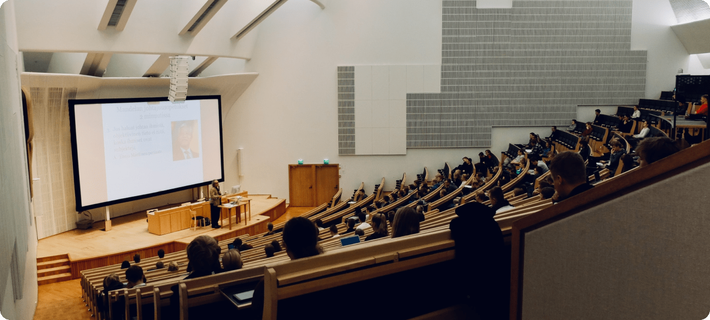
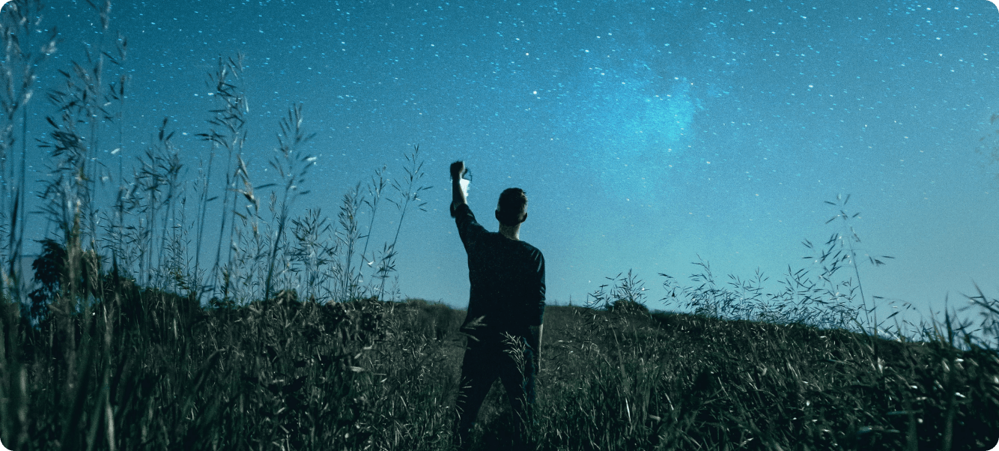
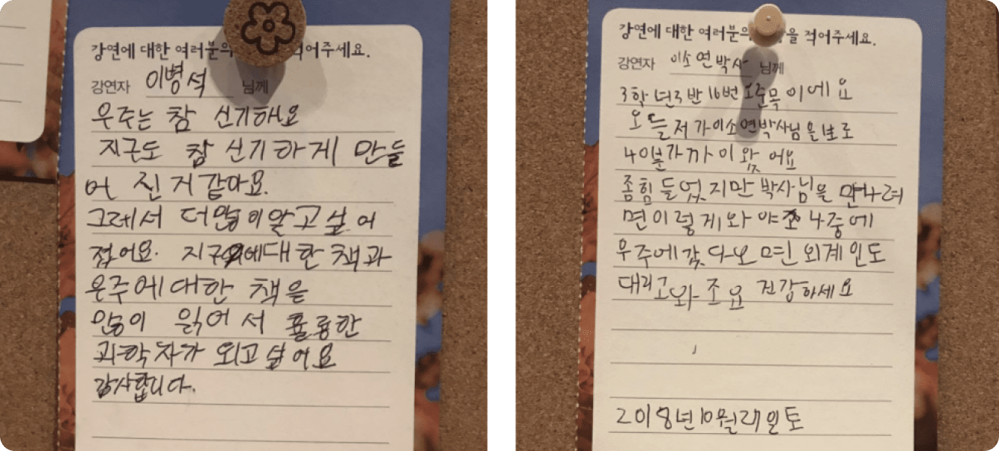

10월의 하늘은 과학자들이 10월 마지막 주 토요일마다
문화적 혜택을 받지 못하는 지역의 도서관을 찾아가 강연을
하는 재능기부 과학강연 행사입니다. 인구 20만 명 이하의
작은 도시, 읍면 단위의 도서관을 중심으로 과학자,
공학자들이 청소년을 위한 무료 과학 강연 나눔을 펼치고
있습니다. 강연 기부에 관심이 있는 과학기술 관련 연구원,
대학원생, 교수님들, 과학자 등 많은 분들이 자발적으로
동참해주시고 계십니다.
정재승 교수님께서 “소도시의 어딘가에서 단 한번의 ‘꿈'을
꿀 기회를 얻지 못해 과학자라는 꿈에서 멀어지는 어린이와
청소년이 없기를 바라는 마음”에서 시작하셨다고 합니다.
“어린 시절에 과학이 주는 경이로움을 체험한 청소년은
우주와 자연, 생명을 존중하고 그것을 탐구하는 삶을
가치 있게 받아들입니다. 그런데 인구 20만 명 이하의
작은 도시나 읍면에선 이러한 체험을 할 수 있는
기회조차 거의 없습니다. 과학을 꿈꾸고 그 꿈을 향한
절실함을 갖추고, 그 길을 치열하게 걸어가는 노력은
꿈꾸는 각자의 몫일겁니다. 하지만 과학이 무엇인지에
대해, 과학이 주는 경이로움에 대해 느껴볼 기회 조차
없는 이들에게, 꿈꿀 수 있는 계기를 주는 것은 너무나
시급하고 중요한 일입니다.” - 정재승 교수님
이 행사는 처음부터 끝까지 순수하게 자발적인 참여로
이루어지고 있습니다. 도서관으로 갈 때부터 발생되는
교통비 등의 비용 역시 강연 및 진행 기부자 본인이
부담하고 후원 역시 도서관에 기부할 책과 선물로 받고
있습니다.

10월의 하늘은 같은 제목의 영화인 <옥토버 스카이>와
관련돼 있어요. 탄광촌에 사는 주인공 ‘호머'는 1957년
10월의 어느날, 소련에서 쏘아 올린 인공위성(하늘을 향해
날아오르는 별)에 관한 뉴스를 보고 로켓 과학자가 되겠다는
꿈을 키우게 됩니다. 열악한 환경과 주변 사람들의 비웃음,
냉대, 온갖 좌절과 실패를 이겨내면서 만침내 미 항공우주국
NASA의 우주 로켓 과학자가 되는 이야기입니다.
“탄광촌 소년에게 과학에 대한 꿈을 심어주었던
‘하늘을 향해 날아오르는 별'이 많은 청소년들을 향해
날아가길 바라는 마음으로 2010년도부터 꾸준히
개최되어 오고 있습니다. 이것이 10월의 하늘 :
과학자의 작은 도시 강연 기부 행사입니다. 2010년을
시작으로 올해 10번째를 맞는 10월의 하늘은 소년
호머가 그랬듯 우리나라의 청소년들이 이 강연을 통해
자연과 과학의 경이로움을 느끼고, 과학의 꿈을
키워나갈 수 있게 되기 바랍니다. 10월의 하늘에서
강연을 들었던 청소년들 중에서 한 명이라도 과학자
혹은 공학자가 되어 세상을 더 근사한 곳으로 만드는데
기여해 준다면 우리는 항상 <10월의 하늘>을 준비할
것입니다. - 정재승 교수님

10월의 하늘의 역사를 거슬러 올라가면, 2005년 무렵으로
가야합니다. 정교수님이 서산의 한 도서관에 초청을 받아서
가시게 되었고, 그곳에서 과학강연을 하게 됐는데, 의외로
학생들의 반응이 뜨거웠대요. 과학자를 보기 위해 읍내에서
1시간이 넘게 버스를 타고 온 학생부터 과학자를 처음
본다면서 몸을 만지려는 장난꾸러기 학생들까지. 그런데 그
때 정교수님이 그런 모습을 보고, 아.. 서울에서는 조금만
가면 과학자를 만날 수 있는 강연이나 기회가 많은데 작은
규모의 지역에 있는 학생들은 과학자를 만날 기회가
없구나라는 사실에 충격을 받으셨던 것이죠.
그 후 지방 도서관에서 과학강연을 하는 것을 재능기부인
줄도 모른 채 몇 해 동안 해오셨습니다. 하다 보니 혼자
하기 아쉬워 2010년 9월 트위터에 작은 메시지 하나를
띄웠는데, 8시간도 안돼서 연구원, 교수, 의사, 교사 등
100여 명의 강연기부자들이 신청을 해주셨습니다. 2010년 첫
해, 전국 29개 도서관에서 67명의 과학자들이 동시에
과학강연을 기부하는 아름다운 기적이 만들어졌습니다.
정재승 교수님께서는 1년 중 364일은 자신의 재능을 자신의
현업에서 발휘하지만 10월의 마지막 토요일 하루만은 더
나은 미래를 위해 내 재능을 기꺼이 나누고 기부하자는
취지에 공감한 과학자들이 참여해 준 덕분에, 지금까지
이어올 수 있다고 하셨습니다.
전국 각지의 시립, 군립 도서관에서 이루어지고 있습니다. 도서관이라는 공간은 누구에게나 열려 있고, 그 지역의 청소년들에게는 편안하게 다가갈 수 있는 곳이라고 생각합니다. 열린 책들이 있는 것처럼, 열린 강연이 있는, 그래서 관심만 있다면 누구라도 자유롭게 와서 들을 수 있는 공간이에요. 10월의 하늘 강연을 듣고 이후에도 과학에 대한 관심을 꾸준히 가진 학생들이 과학을 친근하게 여기고 다양한 독서로 이어질 수 있었으면 좋겠습니다.
이름이 익숙하고 저명한 과학자분들도 계시고 학계에서 꾸준히 강의하시는 교수님들, 대학원생 등 다양합니다. 과학자뿐 아니라 다양한 직업군에 계신 분들께서도 강연자로 참여해주시고 있습니다. 2011년 10월의 하늘에서 강의했던 내용을 담은 <과학, 10월의 하늘을 날다>라는 책에 방송국 PD인 김민식 님, ‘불멸의 이순신' 등의 소설가 김탁환 님 등 언뜻 보기에 과학과는 무관할 것만 같은 분들도 10월의 하늘 강연을 위해 참여해 주셨습니다. 과학이라는 건, 우리가 살아가는 세상의 이치를 좀 더 과학적으로 다루는게 아닐까 싶은데요. 이 분들의 강의를 보면 과학이 인문과 별개의 것이 아니구나라는 생각도 듭니다. 예를 들면 <내조의 여왕>을 연출하셨던 김민식 PD님이 각종 드라마를 예로 들어 SF와 같은 상상력이 어떻게 이야기의 재미를 배가 되게 하는지 잘 설명해 주셨거든요.
주로 어린이와 초등학생이 많지만 올해부터는 중고등학생, 청소년들도 많이 와주었으면 좋겠습니다. 강연자께서 쉽고 재미있게 설명을 하더라도, 매우 어린 학생들을 이해시키는데에는 용어도 익숙지 않아 아이들이 어렵게 느끼지 앟을 까 하는데, 이 어린아이들이 무척 신기하게도 똘망똘망하게 강연에 흥미롭게 참여하고 듣고 있다는 것이 놀랍습니다. 그렇지만 강연자 분들이 일정한 강의 수준을 준비할 수 있도록 초등학교 고학년에서 중학생, 고등학생이 많이 와주길 소망하고 있습니다.
10월의 하늘은 정말, 모두가 자발적인 참여로 순수하게 이루어지고 있습니다. 과학 강연을 해주시는 강연자 분들도, 강연 진행을 해주시는 진행자분들도, 도서관에서도 10월의 하늘을 준비하고 기획하는 준비위원 분들도 모두가 자발적인 참여로 활동하고 있습니다. 단 하루동안 벌어지는 행사이지만 10명이 넘는 사람들이 석 달 전부터 준비를 합니다. 초여름부터 모인 준비위원회 위원분들이 ‘10월의 하늘'을 치르기 위해서 도서관을 섭외하고, 강연자를 모집합니다. 청어람 미디어 출판사의 도움으로 강연을 묶어 책으로 펴내기도 합니다. 또 강연에 참석한 학생들이 강연을 듣고 정성스레 감사편지를 써서 강연자에게선물할 수 있도록 엽서를 준비하여 전국 도서관으로 보냅니다. 홍보를 위해 포스터도 만들고, 주제곡으로 동영상을 만들어 10월의 하늘을 널리 알리기도 합니다.
모두 현업이 있으신 분들이고, 직장인들입니다. 총 10명이 현재 준비위원으로 구성되어 있는데 총무인 처는 현재 고등학교 국어교사로 근무하고 있습니다. 정말 감사하게도 현직에 계시면서도 10월의 하늘을 위해 시간을 내주시고 계신 분들이지요. 의외로 많은 시간을 들여 10월의 하늘에 동참하고 있다는 사실은 놀랍게 위안이 되고 든든하며 힘이 됩니다. 저희는 홍보팀, 기술지원팀, 도서관팀, 공연팀 이렇게 나눠서 각각 분야를 맡아 운영하고 있습니다.
과학자뿐만 아니라, 청소년에게 꿈을 심어주기 위해 자발적으로 나선 많은 사람들의 힘이 2010년 이후부터 지금까지 10월의 하늘이 지속적으로 이어져 올 수 있게 했습니다. 이 모든 것이 기부로 이루어지고 있다는 건 정말 놀랍고 멋진, 감동적인 일인 것 같습니다. 뭔가를 오래 지속하기 위해서는 그것이 가슴 설레는 일이어야 한다고 정교수님이 말씀하셨습니다. 그래야 세상이 함께 해주고 선한 사람들이 도와준다고요. 10월의 하늘이 그런 것 같아요. “민감한 청소년 시기, 우연히 듣게 된 과학자의 강연, 무심코 읽게 된 과학책 한 권이 젊은 이들에게 과학자의 꿈을 품게 만든다"라고 하신 말씀처럼 좋은 취지의 봉사를 위해 이런 생각에 공감하고 뜻을 모아서 모두가 함께해 나갈 수 있는 토대가 되는 것 같습니다. 